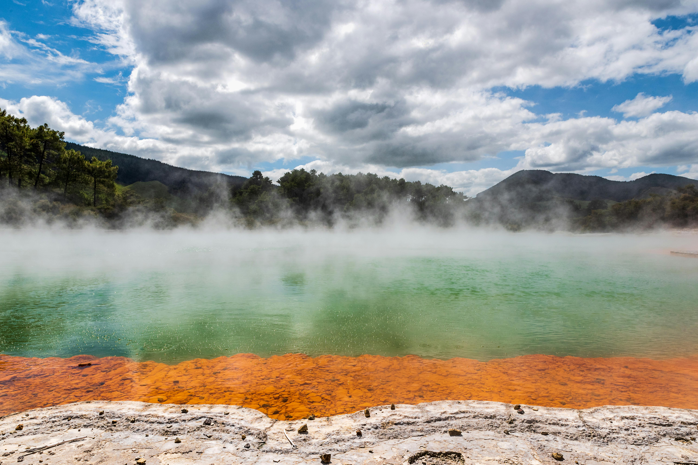

Geothermal lakes & hot springs
The Rotorua region is defined by geothermal activity — hot springs, steaming lakes and the sense that the earth is alive beneath you. A walk or drive through the geothermal valleys reveals colours, steam and a landscape that feels unlike anywhere else.
A chance to experience the raw character of the land.
→ Explore geothermal Rotorua